tar_source() only sources R scripts. Ignoring non-R files: /Users/keletso/Documents/_gitrepos/mpxnyc_data_analysis/R_functions/1_data_processing/_readme
Attaching package: ‘tidygraph’
The following object is masked from ‘package:stats’:
filter
── Attaching core tidyverse packages ──────────────────────── tidyverse 2.0.0 ──
✔ forcats 1.0.0 ✔ readr 2.1.5
✔ ggplot2 3.5.1 ✔ stringr 1.5.1
✔ lubridate 1.9.3 ✔ tibble 3.2.1
✔ purrr 1.0.2 ✔ tidyr 1.3.1
── Conflicts ────────────────────────────────────────── tidyverse_conflicts() ──
✖ dplyr::between() masks data.table::between()
✖ tidygraph::filter() masks dplyr::filter(), stats::filter()
✖ dplyr::first() masks data.table::first()
✖ lubridate::hour() masks data.table::hour()
✖ lubridate::isoweek() masks data.table::isoweek()
✖ dplyr::lag() masks stats::lag()
✖ dplyr::last() masks data.table::last()
✖ lubridate::mday() masks data.table::mday()
✖ lubridate::minute() masks data.table::minute()
✖ lubridate::month() masks data.table::month()
✖ lubridate::quarter() masks data.table::quarter()
✖ lubridate::second() masks data.table::second()
✖ purrr::transpose() masks data.table::transpose()
✖ lubridate::wday() masks data.table::wday()
✖ lubridate::week() masks data.table::week()
✖ lubridate::yday() masks data.table::yday()
✖ lubridate::year() masks data.table::year()
ℹ Use the conflicted package (<http://conflicted.r-lib.org/>) to force all conflicts to become errors
Attaching package: ‘igraph’
The following objects are masked from ‘package:lubridate’:
%--%, union
The following objects are masked from ‘package:purrr’:
compose, simplify
The following object is masked from ‘package:tidyr’:
crossing
The following object is masked from ‘package:tibble’:
as_data_frame
The following object is masked from ‘package:tidygraph’:
groups
The following objects are masked from ‘package:dplyr’:
as_data_frame, groups, union
The following objects are masked from ‘package:stats’:
decompose, spectrum
The following object is masked from ‘package:base’:
union
Linking to GEOS 3.11.0, GDAL 3.5.3, PROJ 9.1.0; sf_use_s2() is TRUE
`summarise()` has grouped output by 'level', 'stratum_a'. You can override
using the `.groups` argument.
`summarise()` has grouped output by 'rep', 'level', 'stratum_a'. You can
override using the `.groups` argument.
`summarise()` has grouped output by 'stratum_a', 'stratum_b'. You can override
using the `.groups` argument.
Joining with `by = join_by(level, stratum_a, stratum_b)`
`summarise()` has grouped output by 'level', 'stratum_a'. You can override
using the `.groups` argument.
`summarise()` has grouped output by 'rep', 'level', 'stratum_a'. You can
override using the `.groups` argument.
`summarise()` has grouped output by 'stratum_a', 'stratum_b'. You can override
using the `.groups` argument.
Joining with `by = join_by(level, stratum_a, stratum_b)`
tar_source() only sources R scripts. Ignoring non-R files: /Users/keletso/Documents/_gitrepos/mpxnyc_data_analysis/R_functions/1_data_processing/_readme
tar_source(): these files do not exist: /Users/keletso/Documents/_gitrepos/mpxnyc_data_analysis/R_functions/3_data_extract
✔ skipped target factor_labels
✔ skipped target data_places_raw
✔ skipped target factor_levels
✔ skipped target initial_settings
✔ skipped target data_people_raw
✔ skipped target data_places_clean
✔ skipped target data_people_clean
✔ skipped target data_bipartite_graph_collected
✔ skipped target data_bipartite_graph_simulated
✔ skipped target data_intervention_results_coverage_collected
✔ skipped target data_intervention_results_coverage_simulated
✔ skipped target data_intervention_results_centrality_collected
✔ skipped target data_intervention_results_centrality_simulated
✔ skipped pipeline [0.192 seconds]MPX NYC
Key findings and recommendations
Methods
Data Collection
Recruitment
- Consultation
- Campaign direction
Questionnaire
- Compiled
- Piloted with feedback survey -Translated
Instrument
Designed and developed from scratch using NextJs (upcoming article) Incorporates aesthetics of recruitment campaign Safety Features: Annonymous (age and geo-cordinates intentioinally coarse)
Ethical Review
Approved by XXXX
Measures
Participant and Contact Venue Characteristics
We solicited information on participant sociodemographics, utilization of healthcare services such as pre-exposure prophylaxis (PrEP), HIV treatment and vaccination against MPOX; connection to queer or transgender community through sex and socializing; and location of primary residence.
Gender identity was measured using a two-step approach: first, we solicited the participant’s current gender (), and then their sex assigned at birth (). Those whose gender identity was not concordant with the gender commonly associated with their sex assigned at birth were categorized as transgender. We used current gender to further categorize transgender people into men and women. Race was measured using a multiple selection question based on census categories (). We defined gender-race subgroup as the combination of gender identity and race.
Finally, we asked whether participants had engaged in group sex or had physical contact in a congregate setting in the four weeks before taking the survey. Those who answered in the affirmative are said to have had contact. We solicited the locations of the venues at which the contact happened which we refer to as contact venues.
For each contact venue, participants indicated the type of place it was () and whether they had sexual (as opposed to non-sexual physical) contact there. As a crude measure of the distance between contact venues, and participant residences, we categorized contact venues into those that are in the same neighborhood as the residence, the same borough but different neighborhood, and a different borough.
Epidemic Scenario and Hypothetical Interventions
To understand the potential impact of a vaccination campaign to contain the spread of a novel pathogen that spreads through person-to-person contact in the queer and trans communities of New York City, we constructed a simplified epidemic scenario and assessed the efficiency, impact, and equity of a set of hypothetical intervention vaccination interventions.
Epidemic Scenario
We assume that a non-lethal pathogen has infected a small number of individuals in New York City. The pathogen is perfectly transmissible so that if one person in a given neighborhood acquires it, all individuals who reside or have contact in that neighborhood will be infected (we can imagine that each neighborhood in New York City has only one physical venue where queer and trans people live, socialize, and have sex, and that the pathogen is perfectly transmissible inside that venue). Finally, we assume that there is a 100% efficacious vaccine which prevents both acquisition and onward transmission of the pathogen.
Vaccination Interventions
We assessed 12 hypothetical vaccination campaigns. Vaccination approaches vary by the setting in which vaccination is conducted, the approach to ranking neighborhoods, and by the vaccination coverage goal. In total, we examined 12 vaccination campaigns (two approaches x three settings x two intervention goals). Under each campaign, neighborhoods of New York City are ranked and then vaccinated in the order of their ranking until a pre-specified vaccination coverage goal is reached.
We assume that vaccination can be conducted in three settings: the neighborhoods that contains the participants’ residences, social contact venues, or sexual contact venues. We examined vaccination campaigns that are conducted in residences, residences and social contact venues, and residences and all contact venues.
We examined two approaches to prioritizing neighborhoods. In the first, neighborhoods are ranked by the number of additional individuals who would be vaccinated in each neighborhood if participants in higher-ranking neighborhoods were vaccinated. In the second, the first approach is applied separately for each race-gender sub-group. The resulting ranking lists are then merged so that all the neighborhoods that have the same ranking in the sub-group-specific lists have a tied ranking in the new list. Finally, duplicate neighborhood names are removed from the new list, keeping the highest ranked copy of the neighborhood name in each instance. We name the former approach a ‘race-gender-blind’ approach and the latter a ‘race-gender-sensitive’ approach.
Finally, we examined two coverage goals. In the first, the vaccination campaign would end once 33% of the overall population receives the vaccine, in the second, the campaign would end once 66% of the population are vaccinated.
Statistical Analysis
We tabulated participant responses to questions about healthcare access, connection with community, and demographics by report of contact. To describe social and sexual contact patterns prior to hypothesized interventions, we visualized contact venue characteristics by sexual contact and distance between venue and home, we calculated the overall transmission efficiency of the social mixing network, and plotted the mixing propensity across sub-groups defined by race-gender, sexual orientation, and age. We examined the operational efficiency, transmission impact, and distributional equity for each intervention approach.
We defined operational efficiency as the ratio between the number of people vaccinated and the number of neighborhoods included in the vaccination campaign – the higher the number of people vaccinated per neighborhood included, the more efficient the intervention is. Transmission impact is defined as the percentage reduction in the transmission efficiency of the social mixing network that results from removing vaccinated nodes from the network. The higher the reduction in transmission efficiency, the higher the transmission impact of the vaccination intervention. Distributional equity is defined as the extent to which vaccination coverage within sub-groups defined by demographic variables mirrors overall population coverage. Intervention approaches that lead to bigger deviations between within and across sub-group coverage are considered inequitable.
We used the nonparametric bootstrap to calculate point estimates and 95% confidenceintervals (CI). This was based on resampling individual participants with replacement.
Results
| No Contact | Contact | Overall | ||
|---|---|---|---|---|
| Total participants | ||||
| Count (%) | 774 (100%) | 530 (100%) | 1304 (100%) | |
| Age | ||||
| 18-24 | 103 (13%) | 92 (17%) | 195 (15%) | |
| 25-34 | 304 (39%) | 234 (44%) | 538 (41%) | |
| 35-44 | 190 (25%) | 135 (25%) | 325 (25%) | |
| 45-54 | 97 (13%) | 48 (9%) | 145 (11%) | |
| 55+ | 80 (10%) | 21 (4%) | 101 (8%) | |
| Gender Identity | ||||
| Cisgender Man | 630 (81%) | 427 (81%) | 1057 (81%) | |
| Cisgender Woman | 43 (6%) | 19 (4%) | 62 (5%) | |
| Another Demographic | 0 (0%) | 2 (0%) | 2 (0%) | |
| Non Binary | 57 (7%) | 39 (7%) | 96 (7%) | |
| Another Demographic | 12 (2%) | 12 (2%) | 24 (2%) | |
| Transgender Man | 17 (2%) | 17 (3%) | 34 (3%) | |
| Transgender Woman | 15 (2%) | 14 (3%) | 29 (2%) | |
| Race | ||||
| Another Group | 40 (5%) | 19 (4%) | 59 (5%) | |
| Asian | 52 (7%) | 32 (6%) | 84 (6%) | |
| Black | 96 (12%) | 60 (11%) | 156 (12%) | |
| Latinx | 128 (17%) | 103 (19%) | 231 (18%) | |
| Multi Racial | 42 (5%) | 37 (7%) | 79 (6%) | |
| White | 416 (54%) | 279 (53%) | 695 (53%) | |
| Sexual Orientation | ||||
| Bisexual | 119 (15%) | 67 (13%) | 186 (14%) | |
| Gay | 498 (64%) | 362 (68%) | 860 (66%) | |
| Queer | 88 (11%) | 71 (13%) | 159 (12%) | |
| Another Orientation | 19 (2%) | 16 (3%) | 35 (3%) | |
| Straight | 50 (6%) | 14 (3%) | 64 (5%) | |
| Recruitment Channel | ||||
| Grindr | 444 (57%) | 262 (49%) | 706 (54%) | |
| Partner toolkit | 82 (11%) | 60 (11%) | 142 (11%) | |
| 65 (8%) | 47 (9%) | 112 (9%) | ||
| 43 (6%) | 19 (4%) | 62 (5%) | ||
| Unknown | 140 (18%) | 142 (27%) | 282 (22%) | |
| HIV Status/ PrEP Use | ||||
| Living with HIV | 81 (10%) | 60 (11%) | 141 (11%) | |
| Not on PrEP | 440 (57%) | 218 (41%) | 658 (50%) | |
| On PrEP | 253 (33%) | 252 (48%) | 505 (39%) | |
| MPOX Test | ||||
| No | 727 (94%) | 472 (89%) | 1199 (92%) | |
| Yes | 47 (6%) | 58 (11%) | 105 (8%) | |
| MPOX Vaccination | ||||
| Unvaccinated | 313 (40%) | 121 (23%) | 434 (33%) | |
| Vaccinated | 461 (60%) | 409 (77%) | 870 (67%) | |
| Queer/Trans Friends | ||||
| 0 | 155 (20%) | 64 (12%) | 219 (17%) | |
| 1-5 | 333 (43%) | 206 (39%) | 539 (41%) | |
| 6-10 | 167 (22%) | 136 (26%) | 303 (23%) | |
| 11-15 | 41 (5%) | 49 (9%) | 90 (7%) | |
| 16+ | 78 (10%) | 75 (14%) | 153 (12%) | |
| Physical contact partners | ||||
| 0 | 301 (39%) | 98 (18%) | 399 (31%) | |
| 1 | 191 (25%) | 68 (13%) | 259 (20%) | |
| 2 | 105 (14%) | 66 (12%) | 171 (13%) | |
| 3 | 64 (8%) | 46 (9%) | 110 (8%) | |
| 4 | 32 (4%) | 47 (9%) | 79 (6%) | |
| 5+ | 81 (10%) | 205 (39%) | 286 (22%) | |
| Sex partners | ||||
| 0 | 272 (35%) | 48 (9%) | 320 (25%) | |
| 1 | 258 (33%) | 86 (16%) | 344 (26%) | |
| 2 | 110 (14%) | 96 (18%) | 206 (16%) | |
| 3 | 62 (8%) | 82 (15%) | 144 (11%) | |
| 4 | 29 (4%) | 62 (12%) | 91 (7%) | |
| 5+ | 43 (6%) | 156 (29%) | 199 (15%) | |
| Borough | ||||
| Bronx | 66 (9%) | 31 (6%) | 97 (7%) | |
| Brooklyn | 258 (33%) | 176 (33%) | 434 (33%) | |
| Manhattan | 320 (41%) | 259 (49%) | 579 (44%) | |
| Queens | 119 (15%) | 58 (11%) | 177 (14%) | |
| Staten Island | 11 (1%) | 6 (1%) | 17 (1%) |
Regarding People
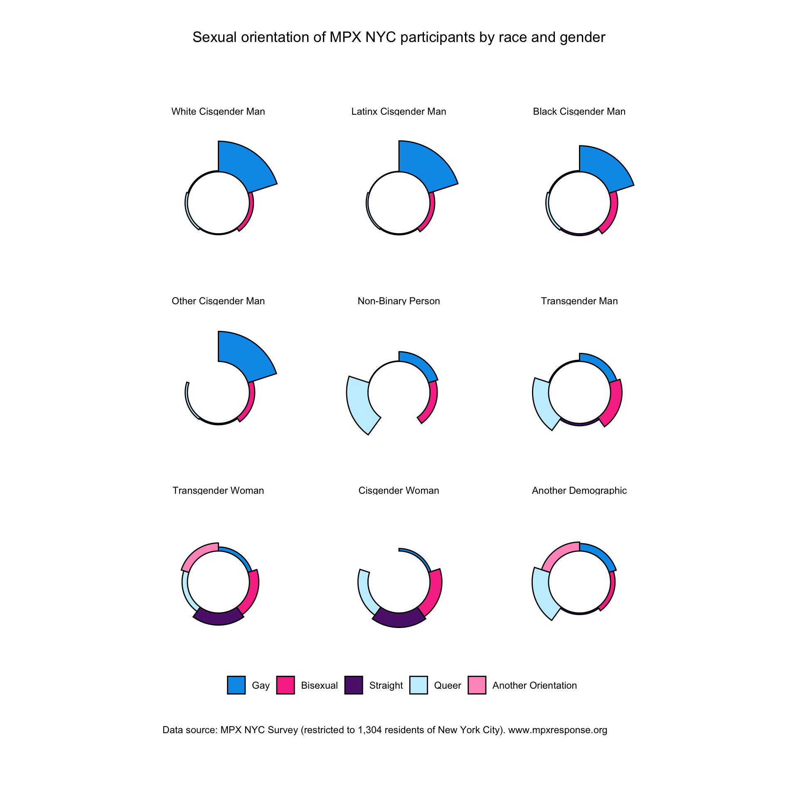
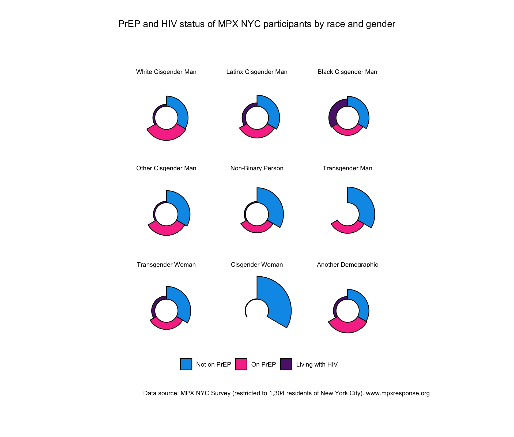
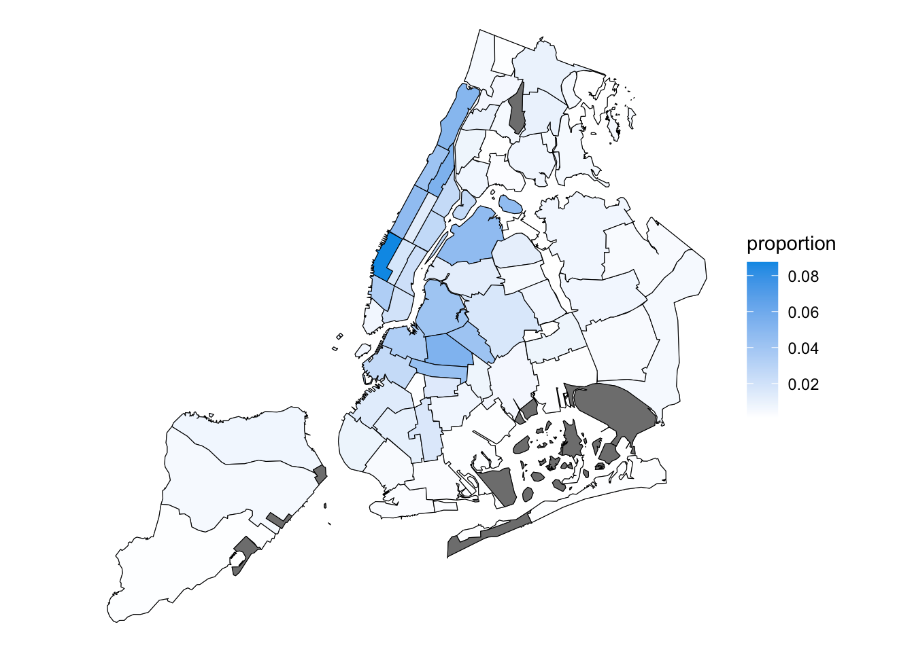
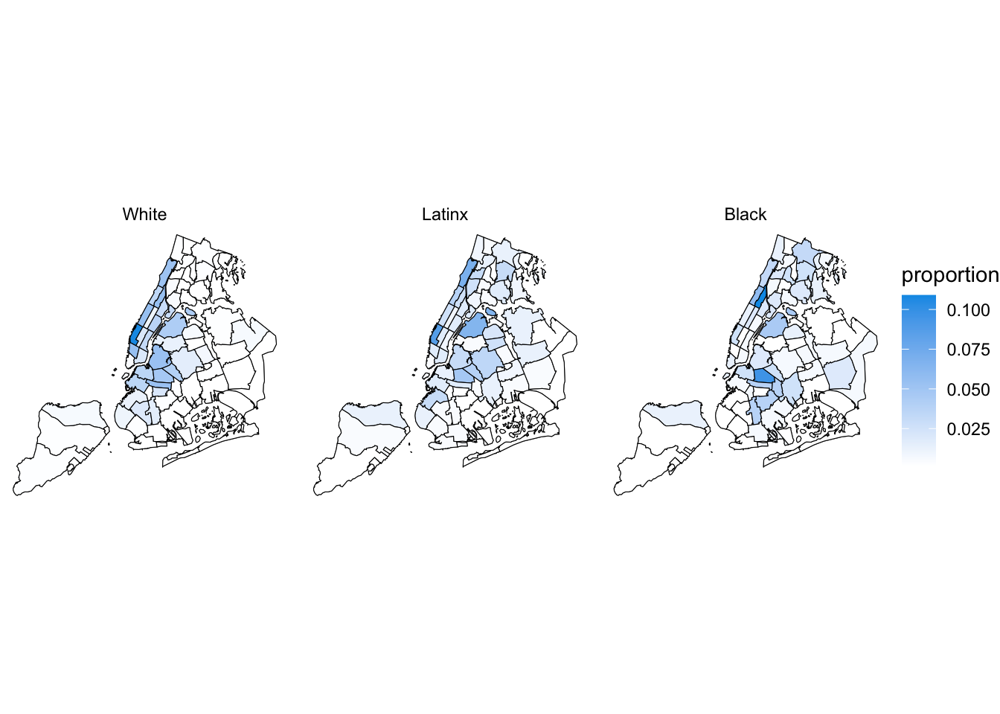
People in places
Overall Sample
Sample by Race
Regarding Places
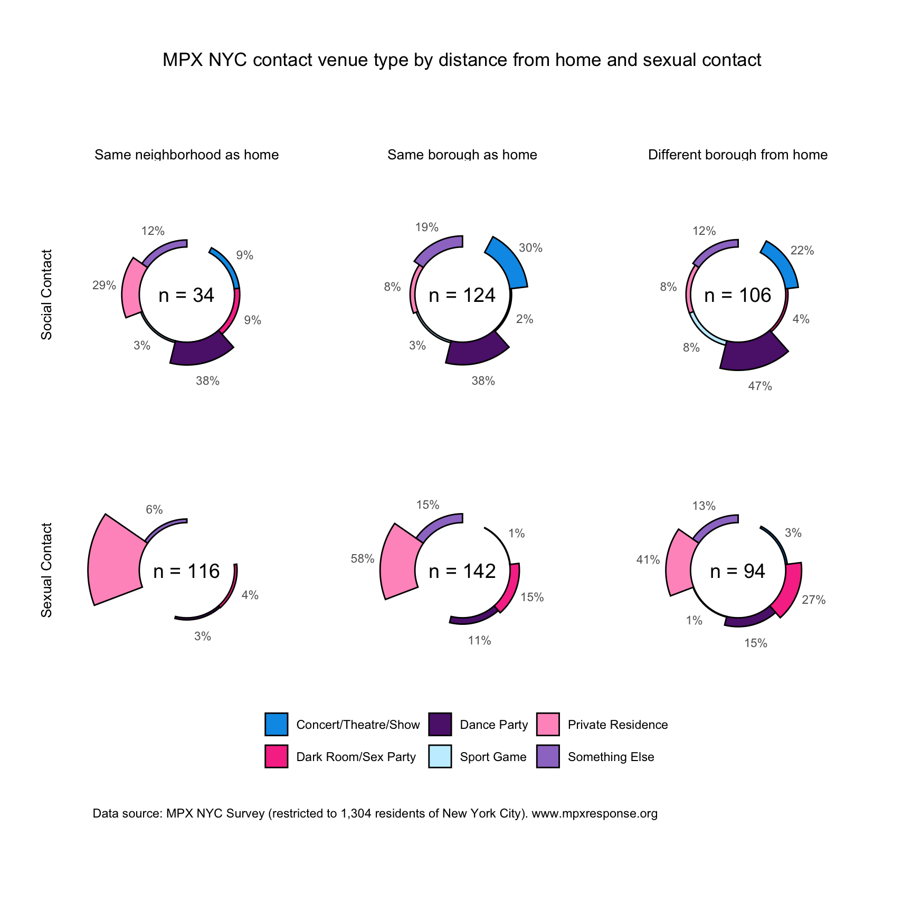
People connecting through places
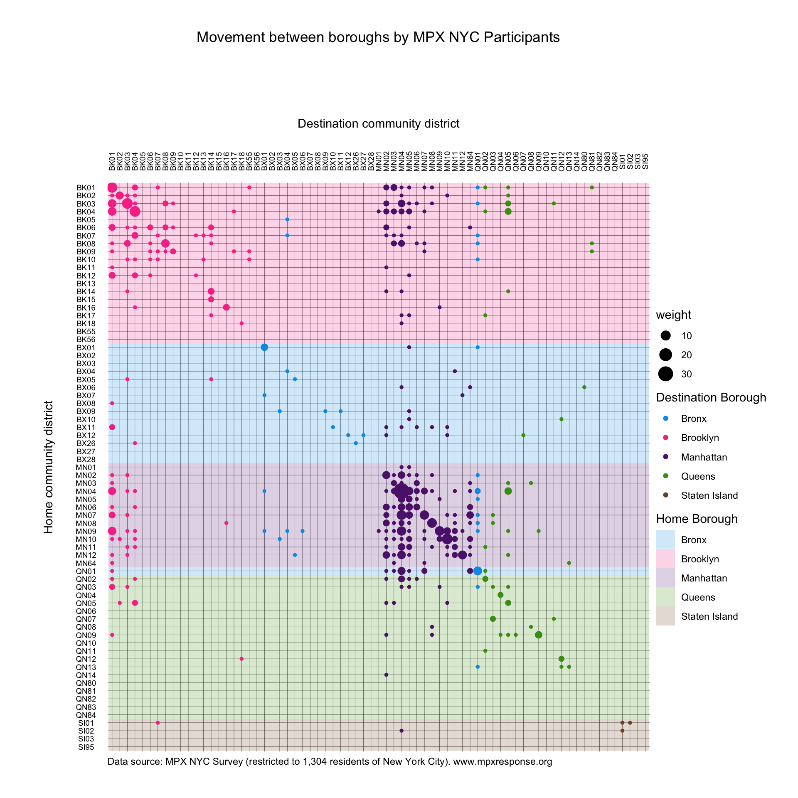
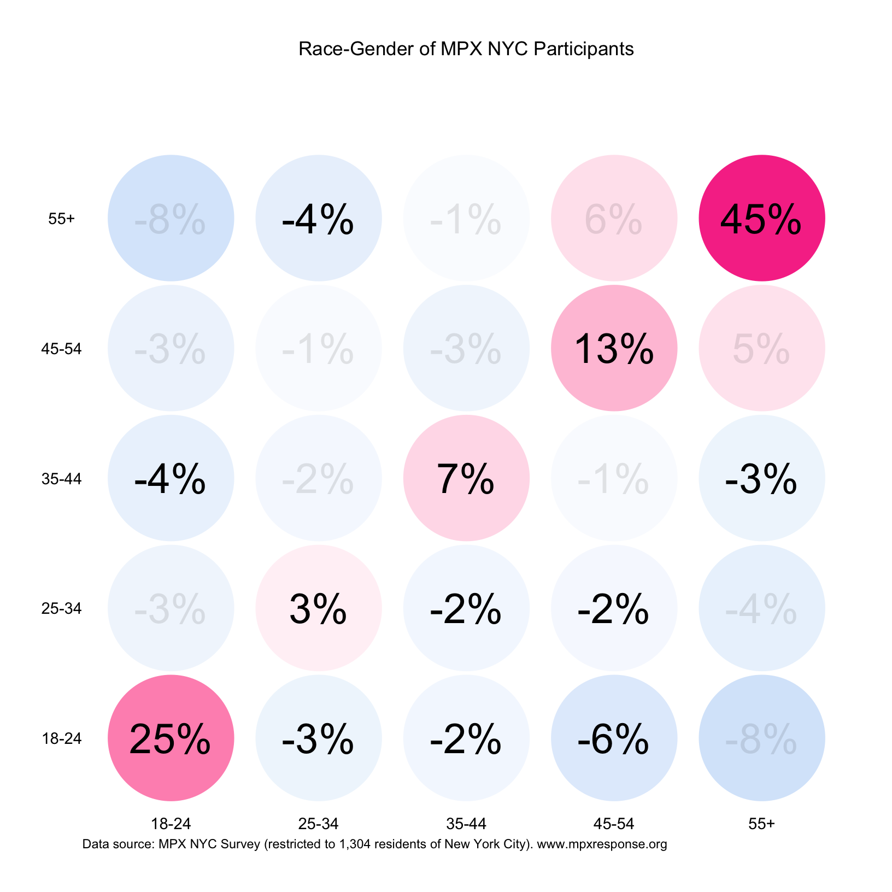

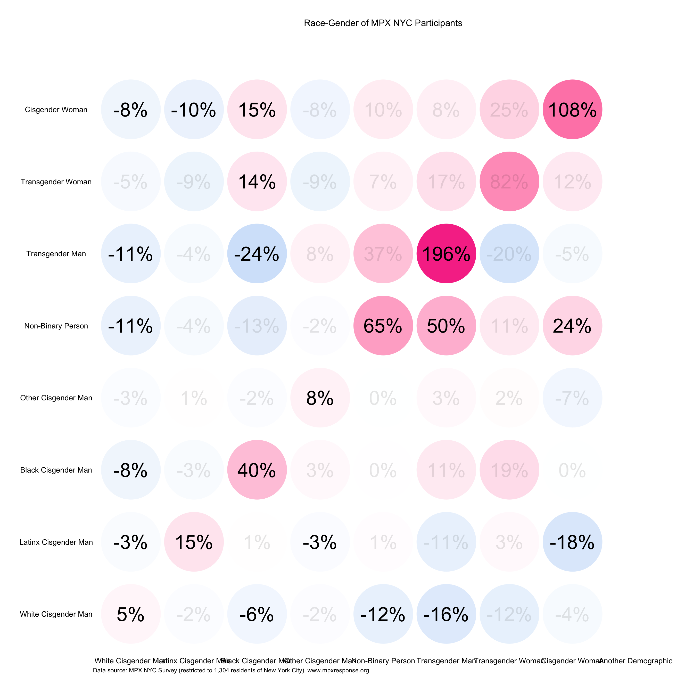
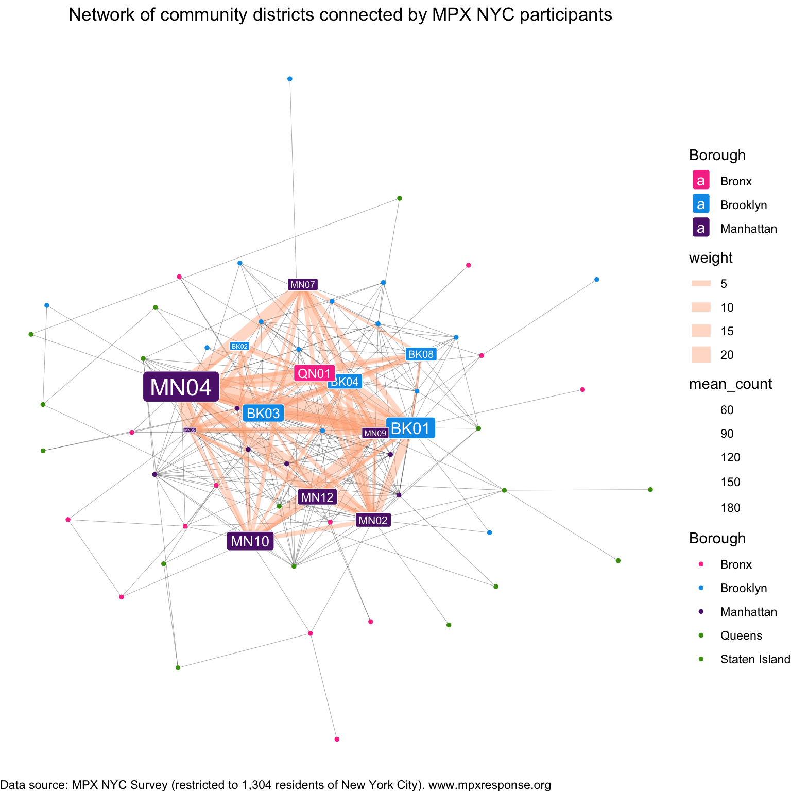
Intervention Efficiency
Efficient Coverage
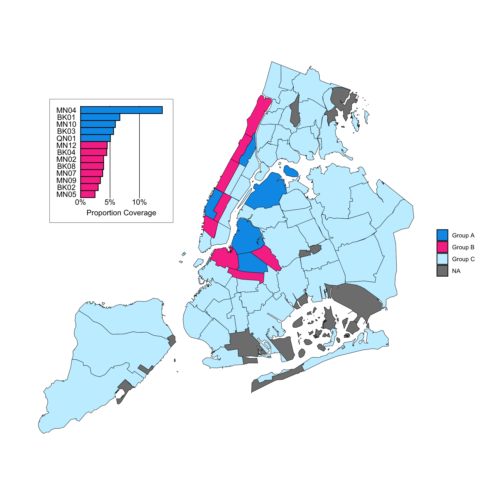
Efficient Disruption
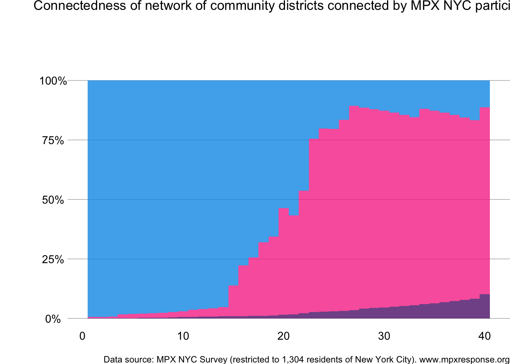
Social and Sexual Contact Patterns
To examine spatial patterns of social and sexual interaction, study data were organized into a social mixing network whose nodes represent participants and weighted ties represent the number of neighborhoods a given pair of individuals both live or had contact in. We used characteristics of this network to characterize patterns of social and sexual contact among participants.
We define transmission efficiency as the proportion of nodes in the largest connected component of the social mixing network. A connected component is a subset of nodes such that each node is reachable from any other node within that subset while no node outside this subset can reach a node within it. A node is reachable from another node if it is possible to connect the pair by tracing along the ties of the network “without lifting the pen. Networks that represent social systems often consist of one “giant connected component” which includes a large proportion of the nodes along with smaller connected components including singletons or those unconnected to any other node. The fewer and larger the connected components of a network are, the more efficient it is for a pathogen to spread across that network along network ties.
We also define mixing propensity between two sub-groups as a measure of the extent to which members of one sub-group live and have contact in the same neighborhoods as those in another sub-group. This measure compares two probabilities: the probability of a member of the former sub-group living or having contact in the same neighborhoods as the latter sub-group, and the overall probability of living or having contact in the same neighborhoods as the latter sub-group. It is calculated by subtracting 1 from the ratio between the first and second probabilities.
A negative mixing propensity indicates that the former sub-group is less likely to live and have contact in the same neighborhoods as the latter group than they would have if they chose neighborhoods at random. Conversely, a positive mixing propensity indicates that the former sub-group has a better than random chance of living or having contact in the same neighborhoods as the latter sub-group.